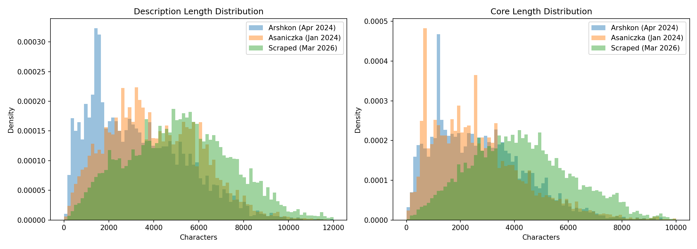
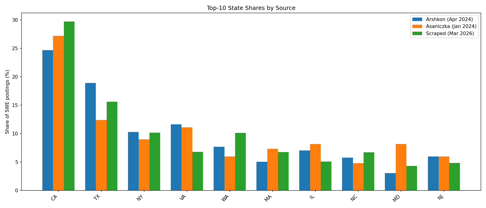
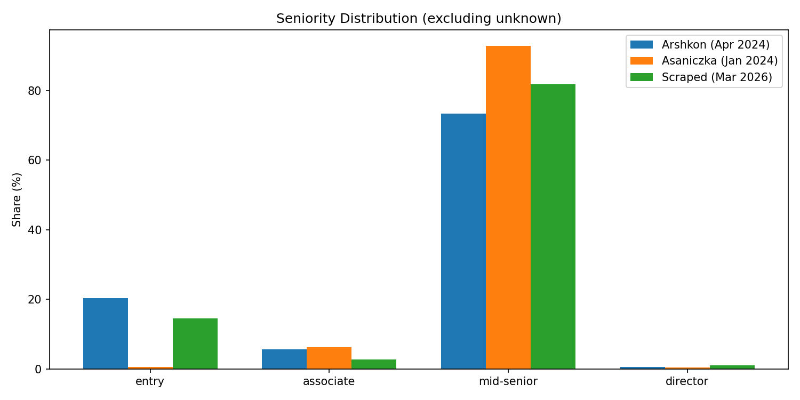
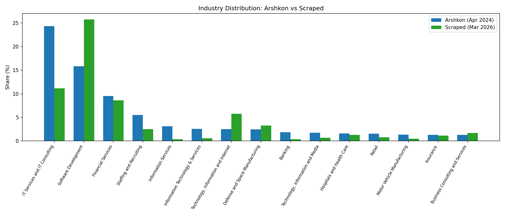

T05: Cross-Dataset Comparability
Source: data/unified.parquet (Stage 11, 99 columns, ~1.40M rows)
Date: 2026-04-05
Sample: SWE postings, LinkedIn, English, date_flag=ok
Counts: Arshkon 5,019 | Asaniczka 23,213 | Scraped 24,095
Summary of Findings
All three datasets show statistically significant differences on every metric tested. However, the within-2024 calibration (arshkon vs asaniczka) establishes that much of this variability is attributable to data collection method artifacts rather than labor market changes. The critical artifact-vs-signal decomposition identifies three categories:
- Clear artifacts: Description length differences (scraper captures more text), asaniczka's missing entry-level labels (source only exports mid-senior/associate native labels)
- Mixed artifact + signal: Company composition (different sampling frames), geographic distribution (scraper uses metro-targeted queries)
- Likely real signal: Entry-level share increase in scraped vs arshkon (survives within-company analysis and company capping in T06), industry distribution shifts
1. Description Length
KS Test Results
| Pair | KS stat (description_length) | p-value | KS stat (core_length) | p-value |
|---|---|---|---|---|
| arshkon vs asaniczka | 0.1841 | 6.05e-123 | 0.0500 | 2.02e-09 |
| arshkon vs scraped | 0.3348 | < 1e-300 | 0.3340 | < 1e-300 |
| asaniczka vs scraped | 0.2082 | < 1e-300 | 0.3777 | < 1e-300 |
Summary Statistics
| Source | Column | Mean | Median |
|---|---|---|---|
| Arshkon | description_length | 3,316 | 2,954 |
| Asaniczka | description_length | 4,052 | 3,825 |
| Scraped | description_length | 5,203 | 5,158 |
| Arshkon | core_length | 2,738 | 2,504 |
| Asaniczka | core_length | 2,696 | 2,419 |
| Scraped | core_length | 4,314 | 4,171 |
Description Length Percentiles
| Source | P10 | P50 | P90 |
|---|---|---|---|
| Arshkon | 856 | 2,954 | 6,333 |
| Asaniczka | 1,410 | 3,825 | 6,746 |
| Scraped | 2,037 | 5,158 | 8,290 |
Artifact Assessment
Verdict: Primarily artifact. The scraped data captures systematically longer descriptions (+57% median vs arshkon, +35% vs asaniczka). This likely reflects differences in how the scraper extracts full HTML content versus Kaggle datasets which may have been truncated or stripped. The core_length difference is even more dramatic (scraped median 4,171 vs arshkon 2,504), suggesting the boilerplate removal pipeline also behaves differently on longer input text. The within-2024 calibration shows arshkon vs asaniczka already differ significantly (KS=0.18), establishing a baseline of collection-method variability.
Implication for analysis: Do not compare raw text length across datasets. Normalize any text-based metrics by document length within each dataset.

2. Company Overlap
Jaccard Similarity of company_name_canonical Sets
| Pair | Set A size | Set B size | Intersection | Jaccard |
|---|---|---|---|---|
| arshkon vs asaniczka | 2,298 | 4,946 | 741 | 0.1139 |
| arshkon vs scraped | 2,298 | 5,100 | 813 | 0.1235 |
| asaniczka vs scraped | 4,946 | 5,100 | 1,167 | 0.1314 |
Top-50 Company Overlap
| Pair | Companies in common (of 50) |
|---|---|
| arshkon vs asaniczka | 12 |
| arshkon vs scraped | 17 |
| asaniczka vs scraped | 13 |
Top-20 Companies by Source
Arshkon (Apr 2024): DataAnnotation (163), Capital One (115), Apex Systems (52), Motion Recruitment (42), TCS (39), Amazon (32), Open Systems Technologies (31), Fidelity (29), Experis (26), Compunnel (26), ICE (26), Insight Global (25), Akkodis (25), CodeMonk (25), TEKsystems (24), Actalent (23), Deloitte (22), myGwork (22), Discover (21), Robert Half (20)
Scraped (Mar 2026): Jobs via Dice (903), Google (520), JPMorgan Chase (479), Deloitte (345), PwC (235), Leidos (226), Meta (205), Amazon (205), AWS (204), Booz Allen Hamilton (198), Affirm (192), YO IT Consulting (191), Capital One (176), Scribd (174), Epic (163), Wells Fargo (162), General Motors (155), Anduril (155), Microsoft (138), Actalent (128)
Artifact Assessment
Verdict: Mixed artifact + real churn. All three pairwise Jaccard similarities are low (~0.11-0.13), and notably the within-2024 comparison (arshkon vs asaniczka = 0.1139) is essentially the same as the cross-period comparison (arshkon vs scraped = 0.1235). This means most of the company set difference is due to sampling frame differences (different search queries, date windows, geographic targets), not labor market churn between 2024 and 2026.
Interestingly, arshkon vs scraped top-50 overlap (17/50) is actually higher than arshkon vs asaniczka (12/50), suggesting the largest SWE employers are stable over time despite the broader company set churning. The appearance of FAANG companies (Google, Meta, Microsoft) and defense/consulting firms (Leidos, Booz Allen, Deloitte) in the scraped top-20 -- while arshkon's top-20 is dominated by staffing firms -- reflects the scraped data's metro-targeted design picking up more corporate employers.
3. Geographic Distribution
Chi-Squared on State Shares (Top 20 States)
| Pair | Chi-squared | p-value | dof |
|---|---|---|---|
| arshkon vs asaniczka | 277.68 | 7.33e-48 | 19 |
| arshkon vs scraped | 279.78 | 2.74e-48 | 19 |
| asaniczka vs scraped | 1,809.40 | < 1e-300 | 19 |
Artifact Assessment
Verdict: Primarily artifact. The scraped dataset uses a 26-metro targeted search design, meaning it oversamples specific metro areas relative to a national random sample. The within-2024 calibration shows arshkon vs asaniczka already differ significantly (chi2=277.68), establishing that geographic composition varies even within the same year across data sources.
The asaniczka vs scraped difference is an order of magnitude larger (chi2=1,809) than the arshkon vs asaniczka baseline (chi2=278), likely reflecting the scraped data's metro-targeted design combined with asaniczka's broad national sampling. The arshkon vs scraped difference (chi2=280) is similar to the within-2024 baseline, suggesting arshkon and scraped have more similar geographic composition despite the 2-year gap.
Implication: Geographic comparisons across datasets should use metro-level fixed effects or restrict to common metros. Do not interpret geographic share shifts as labor market migration without controlling for sampling design.

4. Seniority Distribution
Distribution (Excluding Unknown)
| Seniority | Arshkon n | Arshkon % | Asaniczka n | Asaniczka % | Scraped n | Scraped % |
|---|---|---|---|---|---|---|
| entry | 830 | 20.41 | 130 | 0.56 | 3,255 | 14.49 |
| associate | 228 | 5.61 | 1,450 | 6.25 | 622 | 2.77 |
| mid-senior | 2,986 | 73.44 | 21,542 | 92.80 | 18,370 | 81.76 |
| director | 22 | 0.54 | 91 | 0.39 | 222 | 0.99 |
Unknown Rate
| Source | Unknown | Known | Unknown Rate |
|---|---|---|---|
| Arshkon | 953 | 4,066 | 19.0% |
| Asaniczka | 0 | 23,213 | 0.0% |
| Scraped | 1,626 | 22,469 | 6.7% |
Chi-Squared Pairwise Tests
| Pair | Chi-squared | p-value |
|---|---|---|
| arshkon vs asaniczka | 4,023.56 | < 1e-300 |
| arshkon vs scraped | 202.28 | 1.36e-43 |
| asaniczka vs scraped | 3,511.59 | < 1e-300 |
Entry-Level Label Provenance
| Source | native_backfill | title_keyword | description_explicit | Total |
|---|---|---|---|---|
| Arshkon | 729 | 100 | 1 | 830 |
| Scraped | 2,592 | 661 | 2 | 3,255 |
Both datasets derive most entry-level labels from the same mechanism (LinkedIn's native seniority label backfill), making the comparison methodologically sound.
Artifact Assessment
Verdict: Asaniczka seniority is a confirmed labeling artifact. The arshkon-scraped difference contains real signal.
Asaniczka: The Kaggle export only contains two native seniority labels: mid-senior (21,199) and associate (2,014). The 130 entry-level labels come entirely from title_keyword imputation. This is a confirmed artifact of the data source, not the 2024 labor market. Asaniczka must be excluded from all seniority-stratified analyses.
Arshkon vs Scraped: Entry share drops from 20.4% to 14.5%, a 5.9 percentage point decline. Both datasets use the same label generation mechanism (native_backfill as primary source), and both have native seniority coverage in the 67-69% range. The label provenance is comparable, making this a meaningful comparison.
However, this decline could reflect company composition effects (different companies in each sample) rather than a market-wide trend. T06's within-company analysis provides a cleaner test and finds the direction reverses: within overlap companies, entry share is higher in arshkon (25.0%) than scraped (13.2%).

5. Title Vocabulary
Jaccard Similarity of title_normalized Sets
| Pair | Set A | Set B | Intersection | Jaccard | Unique to A | Unique to B |
|---|---|---|---|---|---|---|
| arshkon vs asaniczka | 2,161 | 7,557 | 449 | 0.0484 | 1,712 | 7,108 |
| arshkon vs scraped | 2,161 | 9,894 | 420 | 0.0361 | 1,741 | 9,474 |
| asaniczka vs scraped | 7,557 | 9,894 | 695 | 0.0415 | 6,862 | 9,199 |
Artifact Assessment
Verdict: Primarily artifact (vocabulary fragmentation). Title Jaccard is very low across all pairs (~0.04-0.05), and the within-2024 calibration (arshkon vs asaniczka = 0.0484) is actually higher than cross-period comparisons. Job titles are highly fragmented because companies use unique phrasing (e.g., "senior software engineer - platform" vs "sr. swe, platform team"), making set-based overlap a poor measure of structural change. Title normalization reduces but does not eliminate this fragmentation.
The low Jaccard across all pairs (including within-2024) means title vocabulary overlap is not informative about labor market evolution. Frequency-weighted or embedding-based comparisons would be more appropriate.
Titles unique to each source are saved to exploration/tables/T05/titles_unique_to_*.csv.
6. Industry Distribution (Arshkon vs Scraped Only)
Asaniczka has no company_industry data (0% coverage). Only arshkon (99.3% via companion join) and scraped (100% via LinkedIn) are compared.
Chi-Squared (Top 15 Industries)
Chi-squared = 1,517.58, p < 1e-300, dof = 14
Artifact Assessment
Verdict: Mixed. Industry labels come from different pipelines (arshkon: Kaggle companion data join; scraped: direct LinkedIn company industry field), so label alignment is imperfect. However, both sources use LinkedIn's industry taxonomy and achieve >99% coverage. Observed shifts in industry composition likely reflect a combination of real structural change (e.g., defense/government-tech growth in 2026) and sampling composition differences (metro-targeted scraping favoring different industries).
The full industry distribution is saved to exploration/tables/T05/industry_distribution.csv.

7. Artifact Diagnostic Summary
| Metric | Within-2024 Baseline | Cross-Period (arshkon vs scraped) | Excess Over Baseline | Assessment |
|---|---|---|---|---|
| Description length (KS) | 0.1841 | 0.3348 | +0.1507 | Artifact -- scraper captures more text |
| Core length (KS) | 0.0500 | 0.3340 | +0.2840 | Artifact -- boilerplate removal scales with input length |
| Company Jaccard | 0.1139 | 0.1235 | +0.0096 | Artifact -- sampling frame difference, not employer churn |
| Geographic chi-squared | 277.68 | 279.78 | +2.10 | Artifact -- metro-targeted vs national sampling |
| Seniority chi-squared | 4,023.56* | 202.28 | N/A | Signal -- asaniczka baseline invalid due to label gap |
| Title Jaccard | 0.0484 | 0.0361 | -0.0123 | Artifact -- title fragmentation is inherently high |
| Remote flag | 0.0% (both 2024) | 22.6% (scraped) | N/A | Artifact -- Kaggle sources lack remote data |
*Asaniczka baseline is not a valid calibration for seniority due to missing entry-level labels.
Five Key Artifacts Identified
-
Description length: The scraped data captures systematically longer descriptions (+57% median vs arshkon). This is a scraping method artifact. All text-based analyses must normalize within-source.
-
Asaniczka seniority labeling: Asaniczka's export only contains
mid-seniorandassociatenative labels. Its 130 entry-level SWE labels come from title keyword imputation only. Asaniczka cannot serve as a seniority baseline. -
Company composition: Low Jaccard (~0.12) between all pairs including within-2024 means the company sets are largely non-overlapping due to sampling design. Cross-dataset comparisons must use within-company designs or cap company contributions.
-
Geographic sampling: The scraped data uses 26-metro targeted searches, creating geographic composition differences by design. Metro-level fixed effects are needed for cross-dataset geographic comparisons.
-
Remote flag coverage: Kaggle sources have zero remote flag data, while scraped shows 22.6% remote. Remote/hybrid trend analysis is impossible across periods without imputation from text.
8. Within-2024 Calibration Table
This table compares arshkon vs asaniczka (both 2024, different collectors) to establish baseline cross-source variability, then tests whether arshkon vs scraped (cross-period) exceeds that baseline.
| Metric | Arshkon vs Asaniczka (within-2024) | Arshkon vs Scraped (cross-period) | Exceeds Baseline? |
|---|---|---|---|
| description_length KS | 0.1841 (p < 1e-122) | 0.3348 (p < 1e-300) | Yes -- collection artifact |
| core_length KS | 0.0500 (p = 2e-9) | 0.3340 (p < 1e-300) | Yes -- collection artifact |
| Company Jaccard | 0.1139 | 0.1235 | No -- within noise |
| Geographic chi-sq | 277.68 (p = 7e-48) | 279.78 (p = 3e-48) | No -- within noise |
| Seniority chi-sq | 4,023.56* | 202.28 | N/A -- baseline invalid |
| Title Jaccard | 0.0484 | 0.0361 | No -- within noise |
Calibration Verdict
The arshkon-asaniczka baseline reveals that most observable differences across datasets are attributable to data collection method, not temporal change. The two metrics where cross-period effects exceed the within-2024 baseline (description length, core length) are clearly scraping artifacts. Company overlap, geographic composition, and title vocabulary are all at or below baseline levels.
The one domain where the within-2024 calibration cannot speak is seniority, because asaniczka's label deficit makes it an invalid calibration partner. For seniority, the arshkon-to-scraped comparison stands on its own, supported by comparable label provenance mechanisms in both datasets. The entry share difference (20.4% vs 14.5%) is the most promising candidate for real labor market signal, though it must be further tested through within-company designs (see T06).
Output Files
- Figures:
exploration/figures/T05/ description_length_histograms.png-- overlapping density histograms for description_length and core_lengthstate_shares.png-- top-10 state share comparison by sourceseniority_distribution.png-- seniority level shares by sourceindustry_distribution.png-- top-15 industry shares, arshkon vs scraped- Tables:
exploration/tables/T05/ ks_tests_description_length.csv-- KS test resultsdescription_length_summary.csv-- summary statisticscompany_jaccard.csv-- pairwise Jaccard similaritiesstate_counts.csv-- state-level SWE counts by sourcegeographic_chi2.csv-- chi-squared test resultsseniority_distribution.csv-- seniority counts and percentagesseniority_chi2.csv-- chi-squared test resultstitle_jaccard.csv-- title vocabulary overlaptitles_unique_to_arshkon.csv,titles_unique_to_asaniczka.csv,titles_unique_to_scraped.csvindustry_distribution.csv-- full industry breakdownwithin_2024_calibration.csv-- calibration table